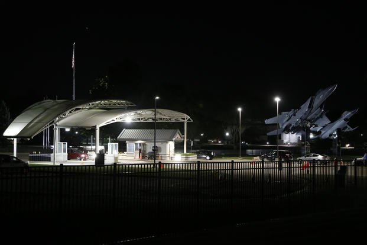

La Entrada Principal
Te acercas sigilosamente a la entrada principal. Hay dos guardias apostados en la garita, armados con rifles de asalto. Una cámara de seguridad barre el área cada 30 segundos.
Observas que uno de los guardias está distraído mirando su teléfono. El otro vigila hacia el norte. Tienes una ventana de oportunidad muy pequeña.
Además, notas a un hombre vestido de civil cerca de la puerta lateral. Parece nervioso. Podría ser un prisionero... o podría ser una trampa.
Estado de la misión
Etapa 2 de 5: Acceso a la base
Ver notas de inteligencia sobre la base
La base tiene tres niveles de seguridad. La entrada principal está clasificada como nivel 2. Los archivos se encuentran en el ala este, nivel 3. Se estima una guardia de 20 soldados activos en este turno nocturno.